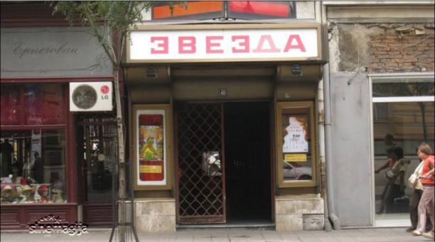

U životu Petra Maraša, pripadnika beogradske automobilske mafije, stvari počinju da dobijaju smisao. Napušta roditeljski dom i sa dugogodišnjom devojkom Sofijom se useljava u svoj novi stan. Klan čiji je pripadnik, a kojim upravlja iskusni „Car“, dobro „radi“. Posao je uigran, novca ima dovoljno za sve, a policija im ne pravi probleme. Sve će se to promeniti kada se Maraš slučajno zameri brutalnom narko klanu. Fantastičnu glumačku ekipu čine Miloš Biković, Miodrag Radonjić, Dragan Bjelogrlić, Nebojša Glogovac, Miloš Timotijević, Jovana Stojiljković, Srđan Todorović, Bogdan Diklić, Aleksandar Berček, Hristo Šopov, Ivajlo Zaharijev. Cena ulaznice je 350 dinara. Više informacija i rezervacije na telefon: 011/5557-501.
Da biste se prijavili na radionicu, potrebno je da popunite prijavu koja se nalazi na sajtu festivala i pošaljete je najkasnije do 03. aprila 2019. Svi učesnici će biti blagovremeno obavešteni o tome da li su primljeni ili ne. Ako ne dobijte odgovor do 05. maja, pošaljite email na sonja@magnificent7festival.org da proverite da li je vaša prijava stigla. Molim vas da tačno upišete svoje kontakt podatke, e-mail kao i broj telefona, kako bismo mogli brzo da vas kontaktiramo u slučaju potencijalnih izmena. Učesnici koji imaju dokazanog iskustva u izradi dokumentarnog filma ili studiraju film, potrebno je da popune samo svoju radnu biografiju. Ostali koji bi voleli da učestvuju, a ne potiču iz sfere filma, pored radne biografije neophodno je da napišu i motivaciono pismo (1000 - 2000 karaktera).
Akademija 28 bioskop u Beogradu nalazi se na uglu Nemanjine i ulice Svetozara Markovića, naspram parka Manjež u samom centru grada, nadomak trga Slavija. Akademija 28 nije samo bioskop već i klub, galerija i pozorišna scena, i kao takav predstavlja jedno od kultnih mesta u Beogradu. Akademija 28 osnovana je 1991. godine kao deo poslovnog sistema Djuro Salaj. Oduvek je bila orijentisana ka kulturi i umetnosti negujući više oblika umetničkih delatnosti. Bioskop Akademija 28 nalazi se u Cinema cafe-u, svojevrsnoj bioskopskoj hali koja naliči kafiću, gde publika duboko uvaljena u udobne fotelje može pratiti aktuelne filmske hitove uz piće. Biletarnica bioskopa Akademija 28 nalazi se na istoj adresi gde i bioskop, a njeno radno vreme je od 12 časova do 20:30 časova radnim danima, a vikendom, ukoliko ima projekcije, sat vremena pre početka projekcije. Pored bioskopske sale Cinema Cafe u Akademiji 28 postoji i bioskopska i pozorisna sala sa ukupno 380 mesta. A Akademija 28 kao kulturni centar dom je i drugih manifestacija kao što su anualni “Rodjendan džeza”, galerija i izložbeni prostor kulturnog amaterskog likovnog društva “Djuro Salaj” i kafića Cinema cafe gde se dešavaju mnogbrojni koncerti kako naših popularnih bendova tako i stranih.
Отворена далеке 1968. године са хиљаду 41 седиштем, као конгресна дворана Шумадија, до новог миленијума била је неизоставна тачка у друштвеном, културном животу Крагујевчана. На овом месту, одржан је низ концерата, фестивала, културно уметничких програма, али дворана Шумадија највише се памти по биоскопу. Последњих десет година место је неупотребљиво, а бројни проблеми, недостатак новца и пројектне документације оптерећивали су све раније покушаје да се реконструише и приведе намени једна од највећих дворана у Србији. Град Крагујевац је искористио позив да кроз пројекат „Градови у фокусу“ коначно уради идејни пројекат и техничку документацију. С обзиром на то, да су последњих година све учесталије гостујуће представе и концерти жанровски различитих извођача, привремени подстанарски смештај на бинама у разним установама показао се сувише тесним. Уз сво гостопримство осталих установа, и публика и извођачи слажу се у једном: није исто као некад на сцени у Шумадији. На потезу је држава.

Samo još stariji sugrađani se mogu sećati nekadašnjih beogradskih bioskopa koji su poput velikih svetskih bioskopa bili uvek puni, a doći do karte je bila posebna priča.
Bioskop 20.oktobar nalazio se u Balkanskoj ulici preko puta hotela Moskav. Pored Kozare bio je jedan od kultnih bioskopa u kojem su se prikazivali uglavnom akcioni filmovi,trileri i borilački filmovi. Bioskop je imao dve dvorane u kojima su se prikazivali različiti filmovi pa su neki koristili priliku kada redar nije tu da plate jedan film a posle da se ušunjaju u drugu dvoranu. I tu su „tapkaroši “ znali da profitiraju kada je bilo dobrih filmova a u to vreme bilo ih je u izobilju. Beograd je nekada bio prestonica bioskopa gde su se u određenim bioskopima pokazivali određeni žanrovi ili bili određeni za premijere velikih hitova. Pored navednih bioskopa o kojima se može puno pričati tu su bili i bioskopi: „Sloboda“,“Jedinstvo“, „Sutjeska“,“Avala“… Zatvaranje Kozare i 20.oktobra je ono što sigurno će zauvek „boleti“ nas starije jer kultna mesta koja su stvarala istoriju su stala sa svojom istorijom. Kada istorija stane koju istoriju mladost može nastaviti da stvara i održava.
Bioskop Jadran nalazio se na Trgu republike a sada su na tom mestu kafići. U njemu su se uglavnom prikazivale drame i domaća filmska ostvarenja, pa tako pamtim da je domaći film „Una“ sa Sonjom Savić dugo bio na repertoaru ovog bioskopa od njegovog snimanja.
Bioskop Odeon nalazio se u ulici Narodnog fronta ( Savski venac). Ovaj bioskop bio je jedan od najposećenijih u Beogradu sa preko 880 sedišta i doći do karte za premijerne filmove je bila avantura. Ukoliko niste poranili onda ste kupovali karte kod „tapkaroša“ za duplo,a kod nekih filmova i troduplo, od redovne cene karte. Prikazivali su se filmovi koji su bili veliki hitovi u svetu poput: „E.T“, „Terminator“, „Star Wars“… Malo je poznato da je upravo u ovom bioskopu počelo među prvima prikazivanje nekog porno filma i to se davao posle ponoći. Prvi porno film koji je došao u beogradske bioskope bio je „Zvezda porno filma.“
Bioskop Slavija nalazi se na samoj Slaviji i to na mestu gde je danas parking. Ovaj bioskop i nije bio puno posećen jer su se davali erotski filmovi, a u holu bioskopa bili su fliperi i video igrice na kojima su bili uglavnom tadašnji beogradski prevaranti.
Bioskop Zvezda nalazi se u ulici Terazije 40 i sem fasade jedino je podsećanje na nekadašnji najbolji bioskop koji je uglavnom prikazivao komedije. U bioskop je uglavnom prikazivao komedije i po tome je bio poznat pa su se tu mogla gledati mnoga filmska ostvarenja iz pomenutog žanra. Ceo serijal francuskog filma o Žandarmu iz San Tropeza se tu mogao odgledati. U to neko vreme prošlog veka komedije su bile veoma popularne a pogotovo tinejdžerske komedije. Mnogi i danas poznati glumci u komedijama su kao tinejdžeri izgradili karijere.
Bioskop Kosmaj nalazio se u pasažu na Terazijama a na tom mestu se sada nalaze butici. Bioskop je uglavnom imao popodnevna prikazivanja filmova koji su se spremali da izađu sa repertoara bioskopa. Ukoliko niste stigli da odgledate neki film tokom redovnog prikazivanja uvek je postojao period kada se našao u bioskopu Kosmaj. Bioskop neradi od 2005 ili 2006.godine.
Bioskop Partizan zatvoren je početkom 2004.godine a nalazio se preko puta Železničke stanice. Tokom devedesetih u njemu su se prikazivali isključivo borilački filmovi ili ti tada poznati žanr karate filmovi. Filmovi su uglavnom bili iz kineske produkcije a u nekoliko navrata znalo se da se na repertoaru nadju i filmovi o „Godzili“ . Svi filmovi Brus Lija tu su se mogli odgledati. Na ulazu u bioskop bili su automati sa raznim igricama i fliperima koji su punili bioskop pored svojih redovnih repertoara. Međutim,tokom vremena bioskop je prestao sa prikazivanjem karate filmova pa su se u tom bioskopu uglavnom mogli odgledati erotski filmovi. Bioskop je bio na „ulici“ na lošem glasu jer su znali neki da započnu i tuče pre projekcije filma a stariji sugrađani sigurno pamte kada su projekcije u određenim terminima otkazivane ili vraćane pare jer je došlo do tuče. Takođe je bio mesto okupljanja dilera,makroa,narkomana i ostalog „čudnog“ sveta.
Bisokop Balkan nalazi se u Braće Jugovića 16. Zatvoren je 2010.godine i bilo je nekoliko najava da će se otvoriti 2020.godine ali pokazaće vreme. Ovaj bioskop ima bogatu istoriju pa se mnogi trude da ga opet vrate svojoj nameni. U njemu su se prikazivala filmska ostvarenja od umetničkog značaja. Prikazivala su se domaća i strana ostvarenja.
Biskop Slavica nalazio se na Karaburmi.Naziv je dobio po prvom posleratnom istoimenom filmu. Bioskop je imao raznovrstan filmski program i zatvoren je još devedesetih godina prošlog veka.
Bioskop Voždovac nalazio se u ulici Kralja Vladimira i zatvoren je 1997.godine. I ovaj bioskop poput bioskopa Slavica imao je raznovrstan filmski program iz kojeg su potekle mnoge beogradske ljubavne priče koje su se prepričavale po Beogradu. Ako si hteo da izvedeš devojku u bioskop,što je bio deo izlazaka u to vreme, uglavnom je to bioskop Voždovac u nadi da ćeš postati deo urbane beogradske ljubavne priče.
Bioskop Kozara nalazio se u Bezistanu i bio je kultni bioskop Beograda. Premijere velikih filmskih ostvarenja prikazivale su se u Domu sindikata i bioskopu Kozara. Doći do karata je bilo skoro uzaludno. Čak i nakon premijere nedeljama nije bilo moguće doći do karata od jutarnjih termina pa do večernjih. Kozara je bila raj za „tapkaroše“ koji su zarađivali velike sume novca ukoliko bi uspeli da kupe karte pre svih a pričalo se da su otkupljivali sve karte „preko veze“ i ako si mogao maksimalno da kupiš 4 karte.